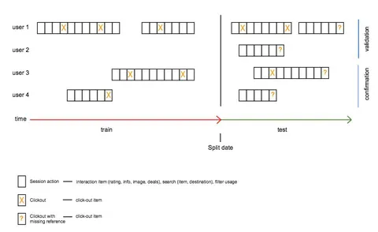

Недавно в одном чате наблюдал мельком за дискуссией о необходимости высшего технического образования в IT. Вот да, правда ли нужно закончить универ, чтобы сделать успешную карьеру в IT? Как будто - нет. Но есть нюанс. Что может вам дать высшее техническое образование в профильном вузе/факультете?
Во-первых, дисциплину и умение учиться. Пройдя суровую школу серьезного ВУЗа вы научитесь преодолевать и достигать, находить решения и срезать углы. Познаете, что такое дедлайны, обратная связь и перформанс-ревью (в ВУЗах это по-старинке называют сессией). Научитесь быстро разбираться в неизвестном, постигать новое и совершать невозможное за ночь. В общем, будете лучше подготовлены к реальной жизни в энтерпрайзе.
Во-вторых, кругозор и базу. Как ни крути, большая часть того, чем мы занимаемся на работе, зиждется на знаниях, полученных в универе. Начиная с того, что кое-как прогать в универе все же учат, заканчивая пользой от понимания базовых штук типа матстата. А если вам в разработке приходится касаться ML, то ВУЗовские знания точно пригодятся. Да и разнообразие учебных курсов поможет расширить круг знаний и интересов. У меня было три семестра эзотерики - рефал, лисп и пролог. Писал ли я на них потом - конечно, нет. Полезно ли было для мозга потрогать функциональщину - точно да.
В-третьих, опыт. Если у вас в универе есть какие-то проекты, или, тем более, вы помимо пар делаете что-то полезное на кафедре, этот опыт полезен. Умение запускать и доводить до ума какие-то проекты, даже учебные, в плюс. Опыт работы в команде (иногда в учебных проектах бывает и такое) - тоже в плюс. Просто факт, что вы немного потрогали разные темы и технологии, поможет вам в дальнейшем. Например, я в универе в рамках одного из курсов писал простенькую игрушку на Qt. Спустя несколько лет мне нужно было принимать решение о выборе технологии, и я уже знал некоторые плюсы и минусы Qt, что изрядно помогло.
Можно ли получить все это без академического образования? Конечно, можно. Самообучение и реальный опыт могут заменить ВУЗ в каком-то объеме. Я даже знаю некоторых CTO без корочки (и очень даже крутых!). Но мое мнение - чтобы все это заменить, нужно быть либо очень талантливым, либо очень упорным и дисциплинированным. В массе - все же профильное образование является сильным подспорьем на старте карьеры.
А те, кто вкатывается в IT без универа, зато после курсов "С++ за 21 день" и всерьез думают, что они моментально стали супер-айтишниками - ну удачи, чё. С наскоку тут успеха не добиться. Хотя с этими вашими вайб-кодингами и курсорами теперь накодить что-то, с пяти метров выглядящее работоспособным, может любой гуманитарий. Правда, такая фигня получится... Но об этом я уже размышлял на заре этого канала.
